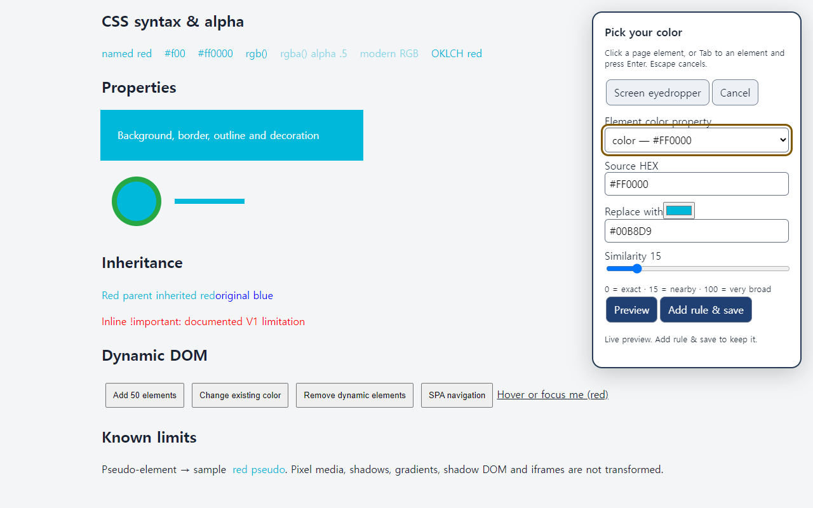
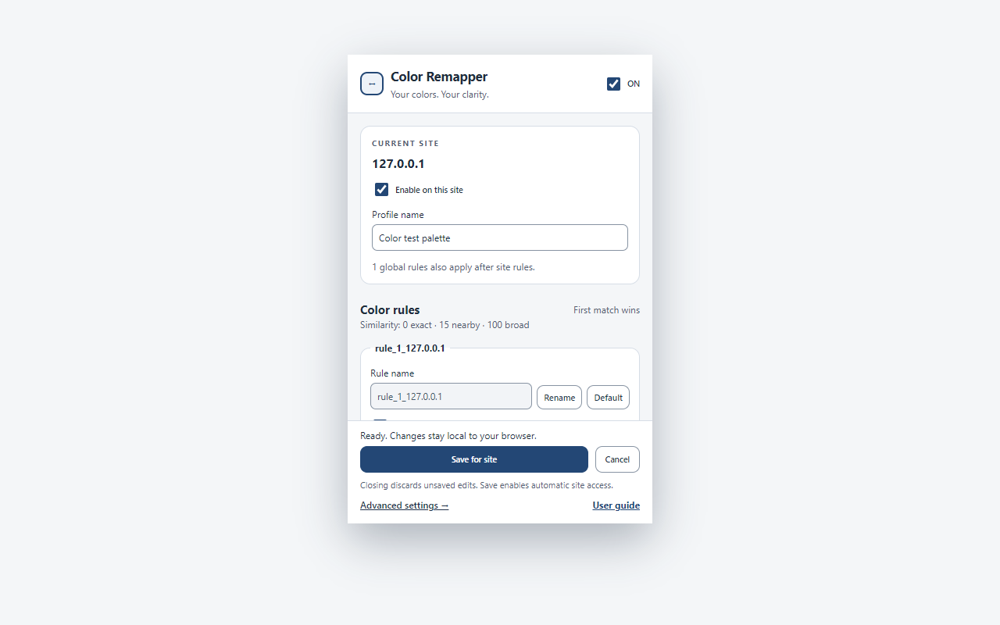
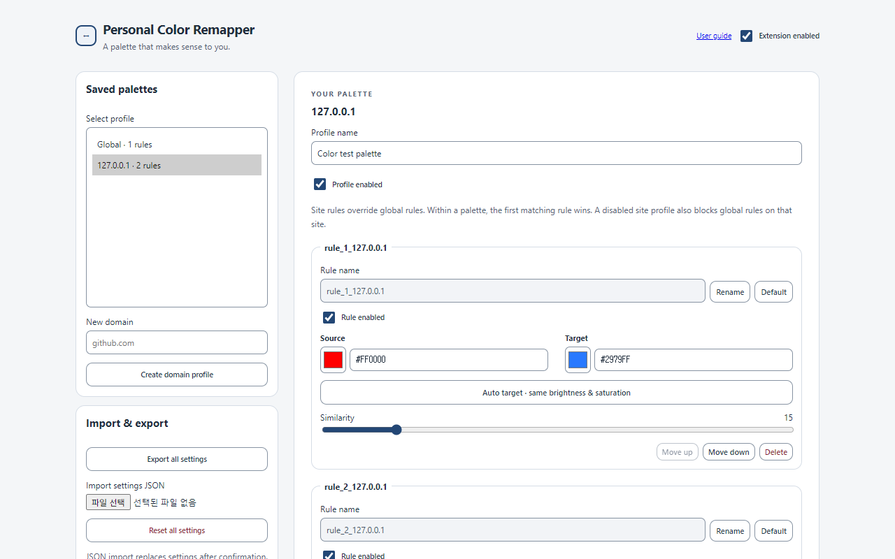

페이지에서 색 선택
요소를 클릭하거나 화면 스포이트를 사용하세요. 현재 페이지에서 적록 색각 시뮬레이션상 혼동될 가능성이 높은 색도 제안합니다.
구분하기 어려운 색을 직접 선택하고, 비슷한 색의 범위를 조절한 뒤, 내가 잘 구분할 수 있는 색으로 바꾸세요. 색각 유형을 몰라도 실제 페이지를 보며 바로 설정할 수 있습니다.
현재 Chrome Web Store 검토 중이며, 승인 후 같은 링크에서 설치할 수 있습니다.


페이지 전체를 한 번에 왜곡하지 않고 실제로 구분하기 어려운 색만 선택해 바꿉니다.
요소를 클릭하거나 화면 스포이트를 사용하세요. 현재 페이지에서 적록 색각 시뮬레이션상 혼동될 가능성이 높은 색도 제안합니다.
Target을 직접 고르거나 밝기와 채도를 맞춘 자동 추천을 사용하고, Similarity로 비슷한 색이 포함되는 범위를 정합니다.
GitHub, Grafana 등 hostname마다 다른 팔레트를 저장하세요. 다음 방문부터 해당 사이트에 자동으로 적용됩니다.
페이지에 실제로 사용된 CSS와 SVG 색상을 표본으로 수집하고 protan/deutan 시뮬레이션에서 서로 가까워지는 색상 쌍을 우선 보여줍니다.
원본의 지각적 밝기와 채도를 유지하면서 적록 색각 시뮬레이션에서 구분하기 쉬운 파랑·청록·보라 계열을 추천합니다. 화면에서 표현할 수 없는 경우에만 채도를 필요한 만큼 조절합니다.
도메인 규칙은 Global 규칙보다 먼저 적용됩니다. 규칙에 알아보기 쉬운 이름을 붙이고, 순서를 바꾸고, JSON으로 백업할 수 있습니다.
rule_1_github.com 기본 이름과 Rename
계정, 서버, 분석 도구, 광고가 없습니다. 팔레트와 hostname 설정은 Chrome의 로컬 저장소에만 보관됩니다.
개인정보처리방침 읽기 →설치 후 원하는 페이지에서 색상을 선택하면 첫 규칙을 만들 수 있습니다.